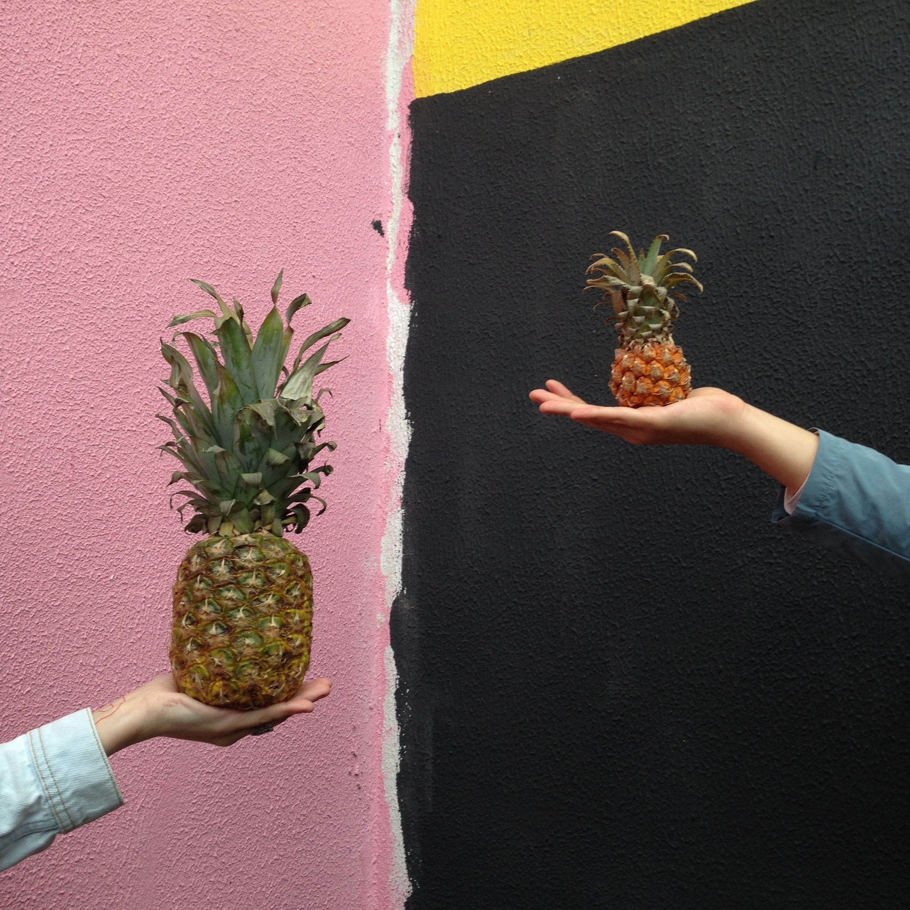

What is...
Virtualization

Virtualization is technology that lets you create useful IT services using resources that are traditionally bound to hardware. It allows you to use a physical machine’s full capacity by distributing its capabilities among many users or environments.
Software called hypervisors separate the physical resources from the virtual environments—the things that need those resources. Hypervisors can sit on top of an operating system (like on a laptop) or be installed directly onto hardware (like a server), which is how most enterprises virtualize. Hypervisors take your physical resources and divide them up so that virtual environments can use them.
Source: https://www.redhat.com/en/topics/virtualization/what-is-virtualization
Containerization

Containerization has become a major trend in software development as an alternative or companion to virtualization. It involves encapsulating or packaging up software code and all its dependencies so that it can run uniformly and consistently on any infrastructure. The technology is quickly maturing, resulting in measurable benefits for developers and operations teams as well as overall software infrastructure.
Containerization allows developers to create and deploy applications faster and more securely. With traditional methods, code is developed in a specific computing environment which, when transferred to a new location, often results in bugs and errors. For example, when a developer transfers code from a desktop computer to a virtual machine (VM) or from a Linux to a Windows operating system. Containerization eliminates this problem by bundling the application code together with the related configuration files, libraries, and dependencies required for it to run. This single package of software or “container” is abstracted away from the host operating system, and hence, it stands alone and becomes portable—able to run across any platform or cloud, free of issues.
Source: https://www.ibm.com/cloud/learn/containerization
How do they compare?
In traditional virtualization, a hypervisor virtualizes physical hardware. The result is that each virtual machine contains a guest OS, a virtual copy of the hardware that the OS requires to run, and an application and its associated libraries and dependencies.
Instead of virtualizing the underlying hardware, containers virtualize the operating system (typically Linux) so each individual container contains only the application and its libraries and dependencies. Containers are small, fast, and portable because unlike a virtual machine, containers do not need to include a guest OS in every instance and can, instead, simply leverage the features and resources of the host OS.
Just like virtual machines, containers allow developers to improve CPU and memory utilization of physical machines. Containers go even further, however, because they also enable microservice architectures, where application components can be deployed and scaled more granularly. This is an attractive alternative to having to scale up an entire monolithic application because a single component is struggling with load.